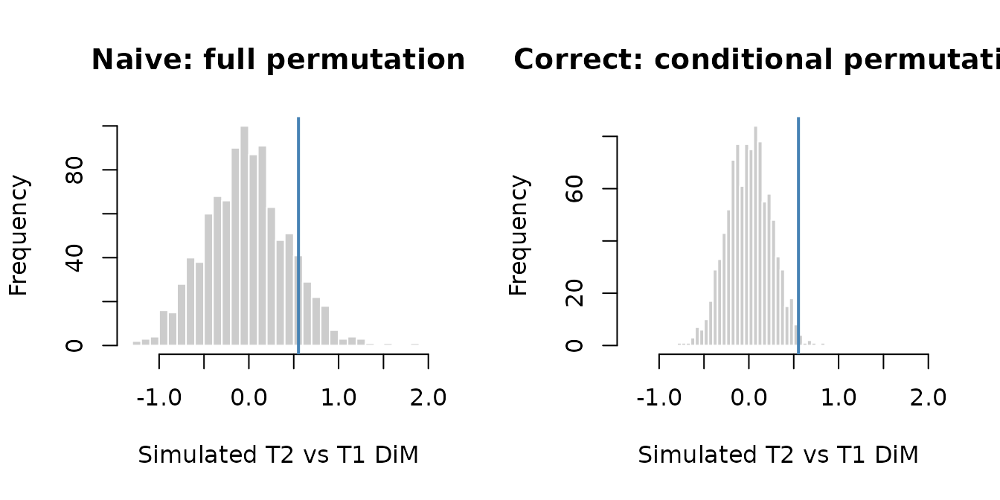
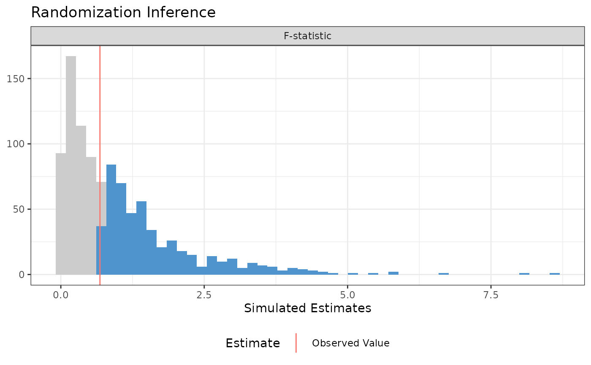
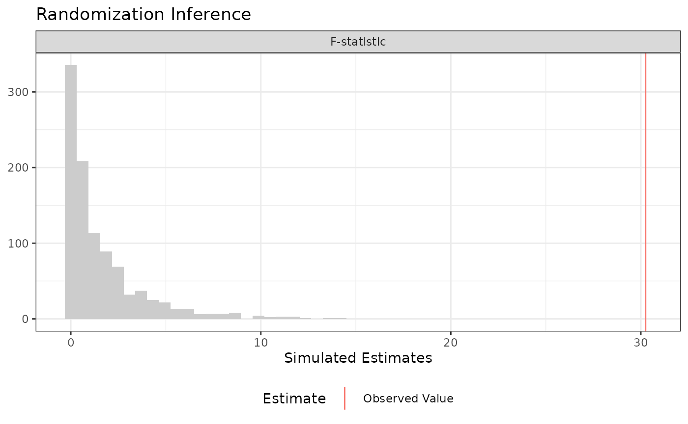
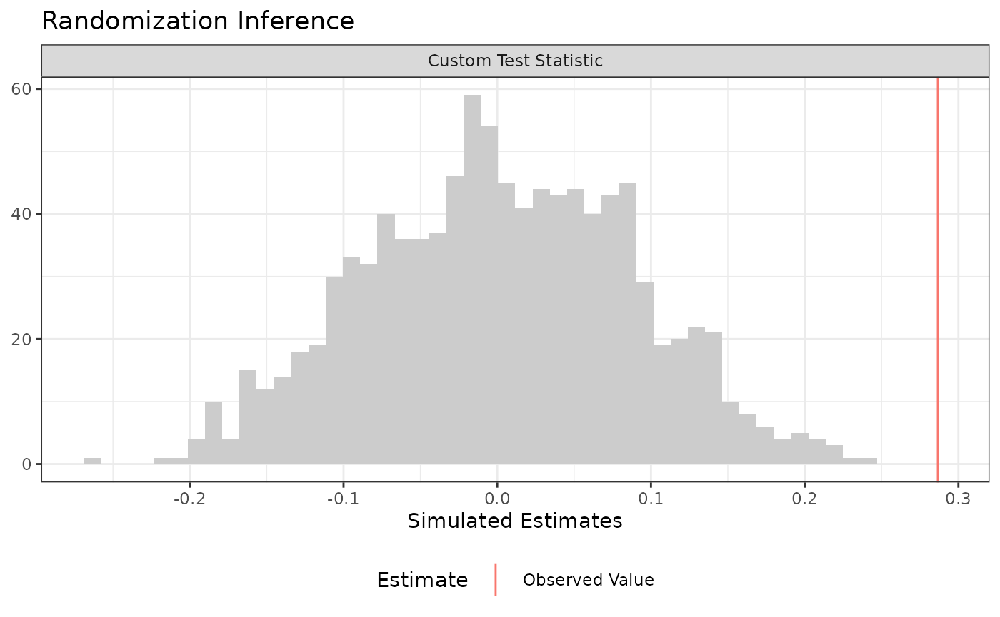

Randomization Inference with ri2
Alexander Coppock
2026-07-29
Source:vignettes/ri2_vignette.Rmd
ri2_vignette.RmdRandomization inference (RI) is procedure for conducting hypothesis tests in randomized experiments. RI is useful for calculating the the probability that:
- a test statistic would be as extreme or more as observed…
- if a particular null hypothesis were true…
- over the all the possible randomizations that could have occurred acccording to the design.
That probability is sometimes called a -value.
Randomization inference has a beautiful logic to it that may be more appealing to you than traditional hypothesis frameworks that rely on - or -tests. For a really lovely introduction to randomization inference, read Chapter 3 of Gerber and Green (2012).
The hard part of actually conducting randomization inference is the
accounting. We need to enumerate all (or a random subset of all) the
possible randomizations, correctly implement the null hypothesis, maybe
figure out the inverse probability weights, then calculate the test
statistics over and over. You can do this by hand with loops. The
ri2 package for r was written so that you don’t have to.1
Basic syntax
Gerber and Green (2012) describe a hypothetical experiment in which 2 of 7 villages are assigned a female council head and the outcome is the share of the local budget allocated to water sanitation. Their table 2.2 describes one way the experiment could have come out.
table_2_2 <- data.frame(Z = c(1, 0, 0, 0, 0, 0, 1),
Y = c(15, 15, 20, 20, 10, 15, 30))In order to conduct randomization inference, we need to supply 1) a test statistic, 2) a null hypothesis, and 3) a randomization procedure.
- The test statistic. The
formulaargument of theconduct_rifunction is similar to the regression syntax of r’s built-inlmfunction. Our test statistic is the coefficient onZfrom a regression ofYonZ, or more simply, the difference-in-means. - The null hypothesis. The
sharp_hypothesisargument of theconduct_rifunction indicates that we are imagining a (hypothetical!) world in which the true difference in potential outcomes is exactly0for all units. - The randomization procedure: The
declare_rafunction from therandomizrpackage allows us to declare a randomization procedure. In this case, we are assigning2units to treatment out of7total units.
library(ri2)
library(randomizr)
# Declare randomization procedure
declaration <- declare_ra(N = 7, m = 2)
# Conduct Randomization Inference
ri2_out <- conduct_ri(
formula = Y ~ Z,
declaration = declaration,
sharp_hypothesis = 0,
data = table_2_2
)
summary(ri2_out)## term estimate two_tailed_p_value
## 1 Z 6.5 0.3809524
plot(ri2_out)
More complex designs
The ri2 package has specific support for all the
randomization procedures that can be described by the
randomizr package:
- Simple
- Complete
- Blocked
- Clustered
- Blocked and clustered
See the randomizr vignette for specifics on each of these procedures.
By way of illustration, let’s take the blocked-and-clustered design
from the ri package help files as an example. The call to
conduct_ri is the same as it was before, but we need to
change the random assignment declaration to accomodate the fact that
clusters of two units are assigned to treatment and control (within
three separate blocks). Note that in this design, the probabilities of
assignment to treatment are not constant across units,
but the conduct_ri function by default incorporates inverse
probability weights to account for this design feature.
dat <- data.frame(
Y = c(8, 6, 2, 0, 3, 1, 1, 1, 2, 2, 0, 1, 0, 2, 2, 4, 1, 1),
Z = c(1, 1, 0, 0, 1, 1, 0, 0, 1, 1, 1, 1, 0, 0, 1, 1, 0, 0),
cluster = c(1, 1, 2, 2, 3, 3, 4, 4, 5, 5, 6, 6, 7, 7, 8, 8, 9, 9),
block = c(rep(1, 4), rep(2, 6), rep(3, 8))
)
# clusters in blocks 1 and 3 have a 1/2 probability of treatment
# but clusters in block 2 have a 2/3 probability of treatment
with(dat, table(block, Z))## Z
## block 0 1
## 1 2 2
## 2 2 4
## 3 4 4
block_m <- with(dat, tapply(Z, block, sum) / 2)
declaration <-
with(dat,{
declare_ra(
blocks = block,
clusters = cluster,
block_m = block_m)
})
declaration## Random assignment procedure: Blocked and clustered random assignment
## Number of units: 18
## Number of blocks: 3
## Number of clusters: 9
## Number of treatment arms: 2
## The possible treatment categories are 0 and 1.
## The number of possible random assignments is 36.
## The probabilities of assignment are NOT constant across units. Your analysis strategy must account for differential probabilities of assignment, typically by employing inverse probability weights.
ri2_out <- conduct_ri(
Y ~ Z,
sharp_hypothesis = 0,
declaration = declaration,
data = dat
)
summary(ri2_out)## term estimate two_tailed_p_value
## 1 Z 2 0.1944444
plot(ri2_out)
Multi-arm trials
The formula interface handles multi-arm trials directly. When the
treatment variable takes more than two values, conduct_ri
produces one result per pairwise comparison against the baseline
condition (the first condition in sorted order). The null distribution
for each comparison is constructed by re-randomizing only the units
assigned to those two conditions while leaving the remaining arms at
their observed values. Each arm therefore gets its own permutation
draws, reflecting the conditional design.
In the example below, units are assigned to one of three arms:
T1 (control), T2, and T3. The
call to conduct_ri looks the same as in the two-arm
case.
set.seed(42)
N <- 120
declaration <- declare_ra(N = N, num_arms = 3)
Z <- conduct_ra(declaration)
Y <- 0.6 * (Z == "T2") + 0.0 * (Z == "T3") + rnorm(N)
dat_3arm <- data.frame(Y, Z)
ri2_out <- conduct_ri(
formula = Y ~ Z,
declaration = declaration,
sharp_hypothesis = 0,
data = dat_3arm,
sims = 500
)
summary(ri2_out)## term estimate two_tailed_p_value
## 1 ZT2 0.7569473 0.00
## 2 ZT3 0.2689631 0.14
plot(ri2_out)
The summary and plot return one row (or panel) per comparison. Here
T2 has a detectable effect while T3 does
not.
When the arms have different hypothesized effects,
sharp_hypothesis accepts a vector of length
,
one entry per comparison in the same order as the terms in the
output:
# Test T2 against H0: tau = 0.6, T3 against H0: tau = 0
ri2_out_vec <- conduct_ri(
formula = Y ~ Z,
declaration = declaration,
sharp_hypothesis = c(0.6, 0.0),
data = dat_3arm,
sims = 500
)
summary(ri2_out_vec)## term estimate two_tailed_p_value
## 1 ZT2 0.7569473 0.350
## 2 ZT3 0.2689631 0.558Why conditioning on the two-arm comparison matters
The pairwise null distribution for T2 vs T1 is constructed by re-randomizing only the T1 and T2 units. A natural but wrong alternative is to permute all three arms and then extract the T2-vs-T1 difference from each permutation. The problem: T3-assigned units carry their T3 potential outcomes. When a full permutation shuffles them into T1 or T2, their outcomes — which reflect the T3 effect, not anything about T2 vs T1 — pollute the null distribution.
The contamination is most visible when T3 has a large effect. Here T3 has an effect of 3, while T2 has an effect of 0.4:
set.seed(7)
N3 <- 90
decl3 <- declare_ra(N = N3, num_arms = 3)
Z3 <- conduct_ra(decl3)
Y3 <- 0.4 * (Z3 == "T2") + 3.0 * (Z3 == "T3") + rnorm(N3)
obs_dim <- mean(Y3[Z3 == "T2"]) - mean(Y3[Z3 == "T1"])
sims3 <- 1000
# Naive: draw a fresh full assignment, record T2 vs T1 each time
dim_naive <- replicate(sims3, {
Zs <- conduct_ra(decl3)
mean(Y3[Zs == "T2"]) - mean(Y3[Zs == "T1"])
})
# Correct: hold T3 units at their observed arm, permute only T1/T2 labels
dim_correct <- replicate(sims3, {
z_new <- Z3
idx12 <- Z3 %in% c("T1", "T2")
z_new[idx12] <- sample(Z3[idx12])
mean(Y3[z_new == "T2"]) - mean(Y3[z_new == "T1"])
})The naive null distribution is much wider because units with (the T3 units) randomly land in T1 or T2 across permutations, adding variance that has nothing to do with the T2 vs T1 comparison:
par(mfrow = c(1, 2))
xlim <- range(c(dim_naive, dim_correct, obs_dim)) * 1.1
hist(dim_naive, breaks = 40, main = "Naive: full permutation",
xlab = "Simulated T2 vs T1 DiM", xlim = xlim, col = "grey80", border = "white")
abline(v = obs_dim, col = "steelblue", lwd = 2)
hist(dim_correct, breaks = 40, main = "Correct: conditional permutation",
xlab = "Simulated T2 vs T1 DiM", xlim = xlim, col = "grey80", border = "white")
abline(v = obs_dim, col = "steelblue", lwd = 2)
## SD of null (naive): 0.45## SD of null (correct): 0.24## p-value (naive): 0.235## p-value (correct): 0.022The naive null’s inflated variance swamps the T2 signal: its p-value
is too large. The correct null’s narrower spread gives a p-value that
reflects the actual T2 effect. conduct_ri() always uses the
conditional approach.
The direction of the distortion, however, is not fixed. It depends on whether T3 units add or remove variance when mixed into the T2/T1 comparison. The previous example had high-variance T3 units, which widened the naive null and made it conservative. A different but equally plausible design produces the opposite: a leveling treatment, where T3 brings all units to a similar outcome level, eliminating baseline heterogeneity. T3 units then have very low outcome variance. When a full permutation shuffles them into the T2 or T1 group, they anchor the group means, narrowing the naive null distribution for the T2 comparison. The same effect that made naive conservative before now makes it anti-conservative.
At the same time, high-variance T1/T2 units contaminate the T3 comparison when they shuffle in, widening that null and reducing power precisely where we have a real effect to detect.
set.seed(42)
N3 <- 90
decl3 <- declare_ra(N = N3, num_arms = 3)
# T1/T2: high-variance outcomes (sd = 6).
# T3: leveling treatment, all units converge near 1.5 (sd = 0.1).
# T2 sharp null is TRUE.
reps_lev <- 300
sims_lev <- 300
p_naive_T2_lev <- p_naive_T3_lev <- numeric(reps_lev)
p_correct_T2_lev <- p_correct_T3_lev <- numeric(reps_lev)
for (s in seq_len(reps_lev)) {
Z_s <- conduct_ra(decl3)
Y0_s <- rnorm(N3, mean = 0, sd = 6)
Y_s <- ifelse(Z_s == "T3", rnorm(N3, mean = 1.5, sd = 0.1), Y0_s)
obs_T2 <- mean(Y_s[Z_s == "T2"]) - mean(Y_s[Z_s == "T1"])
obs_T3 <- mean(Y_s[Z_s == "T3"]) - mean(Y_s[Z_s == "T1"])
d_n2 <- d_n3 <- d_c2 <- d_c3 <- numeric(sims_lev)
idx12 <- Z_s %in% c("T1", "T2")
idx13 <- Z_s %in% c("T1", "T3")
for (j in seq_len(sims_lev)) {
Zn <- conduct_ra(decl3)
d_n2[j] <- mean(Y_s[Zn == "T2"]) - mean(Y_s[Zn == "T1"])
d_n3[j] <- mean(Y_s[Zn == "T3"]) - mean(Y_s[Zn == "T1"])
z2 <- Z_s; z2[idx12] <- sample(Z_s[idx12])
d_c2[j] <- mean(Y_s[z2 == "T2"]) - mean(Y_s[z2 == "T1"])
z3 <- Z_s; z3[idx13] <- sample(Z_s[idx13])
d_c3[j] <- mean(Y_s[z3 == "T3"]) - mean(Y_s[z3 == "T1"])
}
p_naive_T2_lev[s] <- mean(abs(d_n2) >= abs(obs_T2))
p_naive_T3_lev[s] <- mean(abs(d_n3) >= abs(obs_T3))
p_correct_T2_lev[s] <- mean(abs(d_c2) >= abs(obs_T2))
p_correct_T3_lev[s] <- mean(abs(d_c3) >= abs(obs_T3))
}
cat("T2 (null true) — naive rejection rate: ", mean(p_naive_T2_lev < 0.05), "\n")## T2 (null true) — naive rejection rate: 0.11## T2 (null true) — correct rejection rate: 0.04## T3 (real effect) — naive power: 0.1933333## T3 (real effect) — correct power: 0.27The naive T2 test rejects at roughly twice the nominal rate: the low-variance T3 units narrow its null distribution, making modest observed T2 differences look extreme. The naive T3 test has substantially lower power: high-variance T1/T2 units inflate its null distribution, making the real T3 effect harder to detect. The correct conditional approach maintains the nominal type I error rate for T2 and the correct power for T3 in both scenarios. The conditional permutation is not a technicality — it is what makes the test valid.
Comparing nested models
A traditional ANOVA hypothesis testing framework (implicitly or explicitly) compares two models, a restricted model and an unrestricted model, where the restricted model can be said to “nest” within the unrestricted model. The difference between models is summarized as an -statistic. We then compare the observed -statistic to a hypothetical null distribution that, under some possibly wrong assumptions can be said to follow an -distribution.
In a randomization inference framework, we’re happy to use the -statistic, but we want to construct a null distribution that corresponds to the distribution of -statistics that we would obtain if a particular (typically sharp) null hypothesis were true and we cycled through all the possible random assignments.
To do this in the ri2 package, we need to supply model
formulae to the model_1 and model_2 arguments
of conduct_ri.
Three Arm Trial
In this example, we consider a three-arm trial. We want to conduct the randomization inference analogue of an -test to see if any of the treatments influenced the outcome. We’ll consider the sharp null hypothesis that each unit would express exactly the same outcome regardless of which of the three arms it was assigned to.
N <- 100
# three-arm trial, treat 33, 33, 34 or 33, 34, 33, or 34, 33, 33
declaration <- declare_ra(N = N, num_arms = 3)
Z <- conduct_ra(declaration)
Y <- .9 * .2 * (Z == "T2") + -.1 * (Z == "T3") + rnorm(N)
dat <- data.frame(Y, Z)
ri2_out <-
conduct_ri(
model_1 = Y ~ 1, # restricted model
model_2 = Y ~ Z, # unrestricted model
declaration = declaration,
sharp_hypothesis = 0,
data = dat
)
plot(ri2_out)
summary(ri2_out)## term estimate two_tailed_p_value
## 1 F-statistic 0.681984 0.502## Analysis of Variance Table
##
## Model 1: Y ~ 1
## Model 2: Y ~ Z
## Res.Df RSS Df Sum of Sq F Pr(>F)
## 1 99 85.571
## 2 97 84.384 2 1.1866 0.682 0.508Interaction terms
Oftentimes in an experiment, we’re interested the difference in average treatment effects by subgroups defined by pre-treatment characteristics. For example, we might want to know if the average treatment effect is larger for men or women. If we want to conduct a formal hypothesis test, we’re not interested in testing against the sharp null of no effect for any unit – we want to test against the null hypothesis of constant effects. In the example below, we test using the null hypothesis that all units have a constant effect equal to the estimated ATE. See Gerber and Green (2012) Chapter 9 for more information on this procedure.
N <- 100
# two-arm trial, treat 50 of 100
declaration <- declare_ra(N = N)
X <- rnorm(N)
Z <- conduct_ra(declaration)
Y <- .9 + .2 * Z + .1 * X + -.5 * Z * X + rnorm(N)
dat <- data.frame(X, Y, Z)
# Observed ATE
ate_hat <- coef(lm(Y ~ Z, data = dat))[2]
ate_hat## Z
## -0.1414751
ri2_out <-
conduct_ri(
model_1 = Y ~ Z + X, # restricted model
model_2 = Y ~ Z + X + Z*X, # unrestricted model
declaration = declaration,
sharp_hypothesis = ate_hat,
data = dat
)
plot(ri2_out)
summary(ri2_out)## term estimate two_tailed_p_value
## 1 F-statistic 30.25135 0## Analysis of Variance Table
##
## Model 1: Y ~ Z + X
## Model 2: Y ~ Z + X + Z * X
## Res.Df RSS Df Sum of Sq F Pr(>F)
## 1 97 119.61
## 2 96 90.95 1 28.66 30.251 3.137e-07 ***
## ---
## Signif. codes: 0 '***' 0.001 '**' 0.01 '*' 0.05 '.' 0.1 ' ' 1Arbitrary test statistics
A major benefit of randomization inference is we can specify any
scalar test statistic, which means we can conduct hypothesis tests for
estimators beyond the narrow set for which statisticians have derived
the variance. The ri2 package accommodates this with the
test_function argument of conduct_ri. You
supply a function that takes a data.frame as its only
argument and returns a scalar; conduct_ri does the
rest!
Difference-in-variances
For example, we can conduct a difference-in-variances test against the sharp null of no effect for any unit:
N <- 100
declaration <- declare_ra(N = N, m = 50)
Z <- conduct_ra(declaration)
Y <- .9 + rnorm(N, sd = .25 + .25*Z)
dat <- data.frame(Y, Z)
# arbitrary function of data
test_fun <- function(data) {
with(data, var(Y[Z == 1]) - var(Y[Z == 0]))
}
# confirm it works
test_fun(dat)## [1] 0.2866155
ri2_out <-
conduct_ri(
test_function = test_fun,
declaration = declaration,
assignment = "Z",
outcome = "Y",
sharp_hypothesis = 0,
data = dat
)
plot(ri2_out)
summary(ri2_out)## term estimate two_tailed_p_value
## 1 Custom Test Statistic 0.2866155 0Balance Test
Researchers sometimes conduct balance tests as a randomization check. Rather than conducting separate tests covariate-by-covariate, we might be interested in conducting an omnibus test.
Imagine we’ve got three covariates X1, X2,
and X3. We’ll get a summary balance stat (the
-statistic
in this case), but it really could be anything!
N <- 100
declaration <- declare_ra(N = N)
dat <-
data.frame(
X1 = rnorm(N),
X2 = rbinom(N, 1, .5),
X3 = rpois(N, 3),
Z = conduct_ra(declaration)
)
balance_fun <- function(data) {
summary(lm(Z ~ X1 + X2 + X3, data = data))$f[1]
}
# Confirm it works!
balance_fun(dat)## value
## 2.333344
ri2_out <-
conduct_ri(
test_function = balance_fun,
declaration = declaration,
assignment = "Z",
sharp_hypothesis = 0,
data = dat
)## Warning in data.frame(est_sim = test_stat_sim, est_obs = test_stat_obs, : row
## names were found from a short variable and have been discarded
plot(ri2_out)
summary(ri2_out)## term estimate two_tailed_p_value
## 1 Custom Test Statistic 2.333344 0.071##
## Call:
## lm(formula = Z ~ X1 + X2 + X3, data = dat)
##
## Residuals:
## Min 1Q Median 3Q Max
## -0.6969 -0.4808 0.0517 0.4402 0.7874
##
## Coefficients:
## Estimate Std. Error t value Pr(>|t|)
## (Intercept) 0.74479 0.11471 6.493 3.71e-09 ***
## X1 0.05245 0.04465 1.175 0.2430
## X2 -0.09441 0.09920 -0.952 0.3437
## X3 -0.06223 0.02762 -2.253 0.0265 *
## ---
## Signif. codes: 0 '***' 0.001 '**' 0.01 '*' 0.05 '.' 0.1 ' ' 1
##
## Residual standard error: 0.4927 on 96 degrees of freedom
## Multiple R-squared: 0.06796, Adjusted R-squared: 0.03884
## F-statistic: 2.333 on 3 and 96 DF, p-value: 0.07885Conclusion
All of the randomization inference procedures had to, somehow or other, provide three pieces of information:
- a test statistic (the difference-in-means, a regression coefficient, the difference-in-variances, an -statistic, etc.)
- a sharp null hypothesis. The “sharp” in this context means that the null hypothesis has something specific to say about every unit’s potential outcomes. For example, the sharp null hypothesis of no effect for any unit means hypothesizes that each unit’s treatment and control potential outcome are identical.
- A randomization procedure. We discussed simple, complete, blocked, clustered, and blocked and clustered designs, but these are not an exhaustive list of every kind of random assignment. Whatever your randomization procedure is, you have respect it!
Randomization inference is a useful tool because we can conduct hypothesis tests without making additional assumptions about the distributions of outcomes or estimators. We can also do tests for arbitrary test statistics – we’re not just restricted to the set for which statisticians have worked out analytic hypothesis testing procedures.
A downside is that RI can be a pain to set up – the ri2
package is designed to make this part easier.